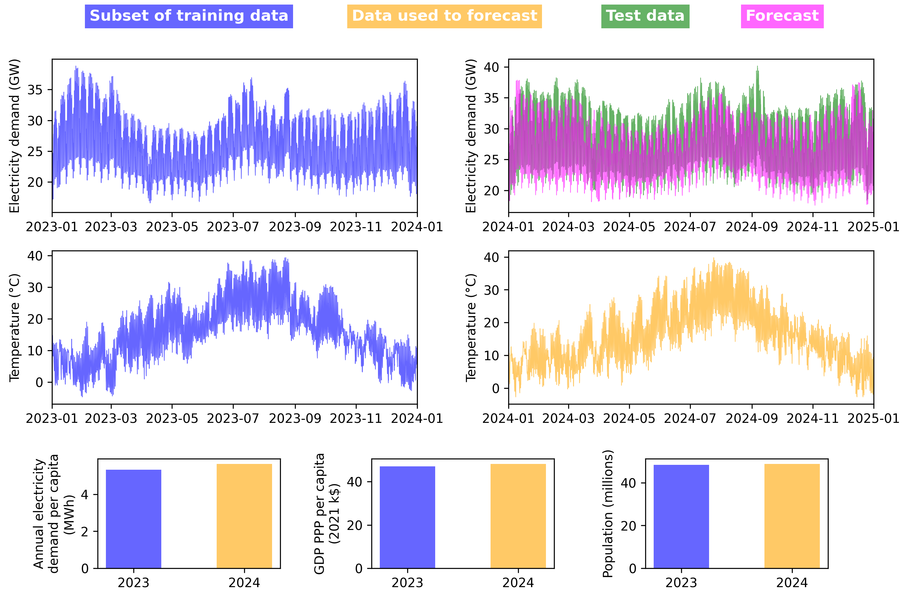

Getting Started (Extended)
This guide provides a comprehensive introduction to setting up and using DemandCast. It covers installation, configuration, basic usage, and answers to frequently asked questions.
1. Installation and Setup
To install DemandCast, follow these steps:
1.1 Clone the repository
git clone https://github.com/open-energy-transition/demandcast.git
cd demandcast
1.2 Set up your environment
This project uses uv as a package manager to install the required dependencies and create an environment stored in .venv.
uv can be used within the provided Dockerfile or installed standalone (see installing uv).
The demandcast folder contains a pyproject.toml file that defines all the dependencies for the project.
To set up the environment, run:
cd demandcast
uv sync
Alternatively, you may use a package manager of your choice (e.g., conda) to install the dependencies listed in the pyproject.toml. If you choose this approach, please adjust the commands below to align with the conventions of your selected package manager.
1.3 Configure environment variables
Some modules require API keys to access data from external services. These keys should be stored in a .env file in the demandcast/ directory. The .env file should not be included in the repository and should contain the following environment variables:
CDS_API_KEY=<your_key> # For data retrieval from Copernicus CDS
ENTSOE_API_KEY=<your_key> # For data retrieval from ENTSO-E
EIA_API_KEY=<your_key> # For data retrieval from EIA
ZENODO_API_KEY=<your_key> # For data upload to Zenodo
SANDBOX_ZENODO_API_KEY=<your_key> # For data upload to Zenodo Sandbox
Replace <your_key> with your actual API keys. You can obtain these keys by registering on the respective service websites.
2. Retrieving Data
Note: You can skip this section if you prefer to use the pre-downloaded data available in this Google Cloud Storage bucket (freely accessible with a Google account). Alternatively, the direct links to the data have the following format: https://storage.googleapis.com/demandcast_data/{variable}/{country_or_subdivision_code}.parquet
In this example, we will retrieve data for four European countries (France, Germany, Italy, and Spain), train a model on data from 2020-2023, and then use it to forecast electricity demand for Spain in 2024. The following steps will guide you through the data retrieval process.
2.1 Create a Country List File
First, create a YAML file listing all countries. Create a file named demandcast/config/example_countries.yaml:
entities:
- country_name: France
country_code: FRA
- country_name: Germany
country_code: DEU
- country_name: Italy
country_code: ITA
- country_name: Spain
country_code: ESP
2.2 Retrieve Electricity Demand
Retrieve historical electricity demand data for all four countries. Edit demandcast/config/retrieve_config.yaml:
variable: electricity_demand
electricity_data_source: entsoe
file: config/example_countries.yaml
Then run:
cd demandcast
uv run retrieve.py
2.3 Retrieve Annual Electricity Demand per Capita
Retrieve annual electricity demand per capita for all four countries from 2020 to 2024. Edit demandcast/config/retrieve_config.yaml:
variable: annual_electricity_demand_per_capita
file: config/example_countries.yaml
start_year: 2020
end_year: 2024
Then run:
cd demandcast
uv run retrieve.py
2.4 Retrieve GDP PPP per Capita
Retrieve GDP PPP per capita for all four countries from 2020 to 2024. Edit demandcast/config/retrieve_config.yaml:
variable: gdp_ppp_per_capita
file: config/example_countries.yaml
start_year: 2020
end_year: 2024
Then run:
cd demandcast
uv run retrieve.py
2.5 Retrieve Population
Retrieve population data for all four countries from 2020 to 2024. Edit demandcast/config/retrieve_config.yaml:
variable: population
file: config/example_countries.yaml
start_year: 2020
end_year: 2024
Then run:
cd demandcast
uv run retrieve.py
2.6 Retrieve Temperature
Retrieve temperature data for all four countries from 2020 to 2024. Edit demandcast/config/retrieve_config.yaml:
variable: temperature
file: config/example_countries.yaml
start_year: 2020
end_year: 2024
Then run:
cd demandcast
uv run retrieve.py
3. Assembling Training Data
Note: You can skip this section if you want to use pre-trained models available in this Google Cloud Storage bucket (freely accessible with a Google account).
After retrieving the necessary data, assemble it into a unified dataset for model training. This step merges electricity demand, temperature, GDP PPP per capita, annual electricity demand per capita, and population data for all four countries from 2020 to 2023.
Edit demandcast/config/assemble_config.yaml:
target_use: training
file: config/example_countries.yaml
start_year: 2020
end_year: 2023
Then run:
cd demandcast
uv run assemble.py
This will create a file in data/assembled/ with the training data.
4. Training the Model
Our approach involves using socioeconomic and weather parameters to predict hourly electricity demand. The model learns patterns from all four countries (France, Germany, Italy, and Spain) for the years 2020-2023, which will later be used to forecast Spain's demand for 2024.
Edit demandcast/config/train_config.yaml to specify the assembled data file path:
reserve_testing_set: true
use_validation_set: false
data_path: data/assembled/assembled_data_for_training_YYYYMMDD_HHMMSS.parquet # Use the actual filename
Then run:
cd demandcast
uv run train.py
The trained model will be saved in ml_models/trained/ with a timestamp in the filename.
5. Assembling Forecasting Data
To forecast electricity demand for Spain in 2024, we need to assemble the input features (temperature, GDP PPP per capita, annual electricity demand per capita, and population) for Spain for that year. Create a file named demandcast/config/spain_only.yaml:
entities:
- country_name: Spain
country_code: ESP
Edit demandcast/config/assemble_config.yaml:
target_use: forecasting
file: config/spain_only.yaml
start_year: 2024
end_year: 2024
Then run:
cd demandcast
uv run assemble.py
This will create a file in data/assembled/ with the forecasting data for Spain.
6. Forecasting
Now use the trained model to forecast electricity demand for Spain. The forecasting script requires both the trained model and the assembled forecasting data. Because electricity demand is predicted in normalized form, the input data must include population to denormalize the predictions back to absolute values (MW).
Edit demandcast/config/forecast_config.yaml:
model_path: ml_models/trained/XGBoost_model_YYYYMMDD_HHMMSS.json # Use the actual filename
data_path: data/assembled/assembled_data_for_forecasting_YYYYMMDD_HHMMSS.parquet # Use the actual filename
Then run:
cd demandcast
uv run forecast.py
The forecasts will be saved in ml_models/forecasts/ and will contain hourly electricity demand predictions for Spain for 2024.
7. Example Results
The figure below illustrates the complete workflow for Spain. The top panel shows the retrieved historical electricity demand data for 2023 and 2024. The bottom panels show the input features used for forecasting: annual electricity demand per capita, GDP PPP per capita, and temperature data for the same years.
In this example workflow: - The model was trained on data from all four countries (France, Germany, Italy, and Spain) for 2020-2023, - The model uses the 2024 input features (temperature, GDP PPP per capita, annual electricity demand per capita, and population) to forecast Spain's hourly electricity demand for 2024, - This demonstrates how DemandCast can forecast future electricity demand for countries using a model trained on historical data from multiple regions.
